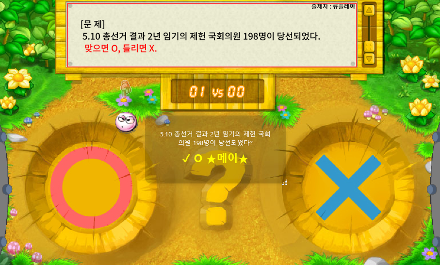

NEW
📢 설치형 다운로드(QuizHelper) 출시!
×
🚀 더 강력해진 족보를 만나보세요!
웹 버전보다 훨씬 빠르고 편리한 설치형 프로그램이 출시되었습니다.

빠른 검색
컴퓨터 성능에 상관없이 즉시 찾아집니다.
투명도 조절
게임 화면 위에 투명하게 띄워둘 수 있습니다.
자유로운 창 크기
원하는 대로 크기를 조절하세요.
화면 가림 해결
큐플레이 화면 위에 다른 프로그램을 올려도 인식됩니다.
📥 지금 바로 다운로드하기
📖 자동족보 사용법
×
자동족보
체크박스를 활성화하세요.
검색창 옆
카메라 아이콘
을 클릭하세요.
화면 공유 창에서
큐플레이 창
을 선택하세요.
※ 크롬 브라우저의 화면 공유 권한이 허용되어야 합니다.
비디오 화면에서
문제가 표시되는 영역을 드래그
하여 선택하세요.
※ 게임마다 문제 영역이 다르므로 정확히 선택해주세요.
캡처 버튼
을 클릭하면 자동 검색이 시작됩니다.
※ 계속 사용하려면 '중단없이' 체크박스를 활성화하세요.
💡 Tip:
게임을 하지 않을 때는 잠시 중단해주세요. 브라우저 성능 저하로 텍스트 인식에 부하가 걸릴 수 있습니다.
🐛 문제 제보
×
✓ 문제가 제보되었습니다. 감사합니다!
카테고리 선택
카테고리를 선택하세요
문제 설명
스크린샷 첨부
📷 클릭하거나 이미지를 드래그하여 붙여넣기
또는 Ctrl+V로 스크린샷 붙여넣기
취소
제보하기
💸그깽 족보💸
v6
📥 설치형 다운로드
🐛 문제 제보
자동족보 사용법
카테고리를 선택하세요
10개
30개
50개
100개
자동복사
자동족보
📷
지우기
−
×
중단없이
캡처
닫기
OCR 처리 중...
□